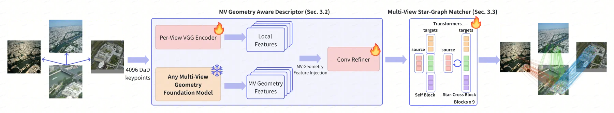
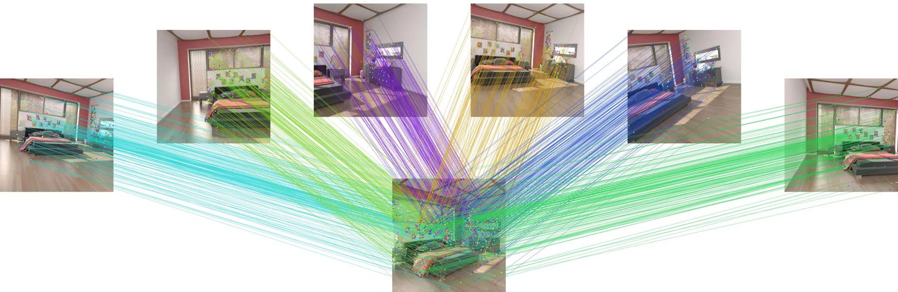
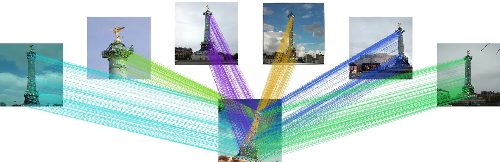

MVLoMa：用任意几何基础模型做多视图局部特征匹配
MVLoMa: Multi-View Local Feature Matching with Any Geometry Foundation Model
把匹配的计算单元从“图像对”改成“星图”：中心图的描述子只算一次，跨视图信息在冻结几何基础模型的末层 token 里已经就位，直接当描述子输入；匹配器只做中心↔邻居的注意力，不交换邻居之间的关系，因此仍能对每条边输出标准 score 矩阵交给 RANSAC。25 视图上平均 AUC@1/5/10 为 58.65/85.41/90.99，比 LoMa-L 高 1.25/0.97/0.93，24 条边一次前向比顺序成对快 2.20 倍（447→203 ms）。代价是显存：匹配器峰值 979 MiB 对 176 MiB。Mip-NeRF 360 的最严阈值上稠密 RoMa 仍最强（75.42 对 74.29），T&T 上 LoMa-L 仍最高（68.22 对 67.96）。
作者、单位与技术谱系 · Research context
作者与单位
研究脉络
- LoMa: Local Feature Matching Revisited（Nordström et al., arXiv 2604.04931）方法基座关系：MVLoMa 明确自称 LoMa 的多视图扩展：沿用 LoMa 的可训练 VGG 流、DaD 关键点、双 softmax 与 matchability 目标，并用公开的 LoMa-L checkpoint 初始化；改动只有“把冻结 DINOv2-L 换成冻结几何编码器末层特征”和“把成对匹配换成星图匹配”。[LoMa 原文（被引为方法基座）]
- Depth Anything 3（DA3, Lin et al., arXiv 2511.10647）与 VGGT / π³ / VGGT-Ω上游基座关系：多视图几何基础模型提供“已跨视图融合、空间对齐”的末层 token，作为描述子的第二路输入；MVLoMa 不改这些模型，只在表 4 中把 DA3-G、π³、VGGT、VGGT-Ω 当作可替换的冻结编码器做同条件比较。[论文 §2.3 与表 4]
- 团队前作：GeoWeaver（长序列 3D 重建）与 UniQuery4R（单查询 4D 重建）团队前作关系：同一批 Kosmo Research 署名作者此前做的是长序列几何装配与 4D 统一重建，本篇转向它们共同的瓶颈——局部子问题的匹配基元；从引用与项目页看是同一研究计划的推进，但论文没有声称代码或模块复用。[GeoWeaver 项目页作者表]
合作网络
- Xinyang Lu（双单位署名）Kosmo Research → 哈尔滨工业大学航天学院关系：同一作者的双重单位署名[arXiv v1 TeX 作者块与单位行]
- Kosmo Research ↔ 清华大学软件学院Kosmo Research（Sheng Tang、Shengzhe Wei、Zesong Li） → 清华大学软件学院（Weiqi Zhang、Juntong Fang）关系：跨单位共同署名（连续三个项目）[MVLoMa 项目页作者与单位]
- KosmoResearch GitHub 账号Kosmo Research → kosmoresearch.github.io 项目页与 UniQuery4R 代码库关系：官方项目托管（同一账号下的项目页与代码库）[GitHub 账号公开仓库列表]
作者、单位、双单位署名与“LoMa 扩展”均取自 arXiv v1 TeX 与官方项目页，属论文事实；“同一团队研究计划推进”基于三个项目页的公开署名重叠，属有来源的解读；未发现公开证据支持导师、师生或实验室隶属关系，故不写入。MVLoMa 目前无公开代码仓库，网络边只记录项目页托管关系。
方法本质拆解 · What actually changed
是不是微调？
是“换掉冻结特征源之后的继续训练”，不是从头训练，也不是纯测试时算法。几何编码器（默认 DA3-G）全程冻结，DINOv2-L 那条冻结流被它的末层 token 取代；真正更新的是 LoMa 原有的可训练 VGG 流、Conv Refiner、描述子投影与匹配器注意力层，并从公开的 LoMa-L checkpoint 初始化。附录给的配置是 784×784、单卡 A800、batch size 1、描述子/匹配器学习率 1e-4 与 2e-4、AdamW 权重衰减 5e-5、EMA 0.999，前 100k 迭代固定四视图、后 100k 迭代视图数在 2–8 均匀采样（而正文 4.1 只写 100k，两处需对齐）。
有没有额外约束？
新增的硬约束作用在“哪些匹配允许被当成正确”上，而不是作用在几何输出上。正样本必须来自深度有效、重投影落在目标图内、且通过遮挡与目标深度一致性检查的稠密 warp；负样本则是最终层互为最大、置信度超过 μ、但对极误差大于 3 px 的匹配，在每一层都用 -log(1-P) 压制，权重 1/(N-1)。也就是说它约束的是赋值矩阵的置信度分布，而不是像 BA 那样约束位姿或深度变量；论文没有引入任何尺度、重力或坐标系先验。
推理/后端到底做了什么？
推理是一次前向，没有迭代优化、没有全局 BA、没有后处理 track snapping。流程是：冻结编码器处理整张星图 → 描述子头融合 VGG 与几何 token → 每图采样 4096 个 DaD 关键点 → L 层“视图内自注意力 + 中心↔邻居交叉注意力” → 逐边双 softmax → 取互为最大且超阈值的条目。输出仍是每条边一张 score 矩阵与置信度，直接交给 PoseLib RANSAC（2.5 px）；中心描述子被共享，所以同一中心点天然可以连到多个邻居，形成候选 star track。
方法本质是什么？
本质是把“多视图几何模型已经算过的跨视图上下文”提前注入描述子，再用星图拓扑把中心状态在所有边上共享，从而把每条边的不确定性从“只看这一对”降到“看过全部邻居之后再定案”。它改变的变量是描述子场与赋值置信度，靠共享中心表示与逐层几何负样本把局部结果接起来，而不是靠全局优化。它没有做的是：邻居之间的直接通信、显式的 track 级优化、以及对位姿/深度的联合优化——这些被明确留给下游 SfM。
输入是中心图加 N−1 张邻居图；改变的位置是描述子输入（换成冻结几何基础模型末层 token）与匹配器拓扑（星图而非逐对）；约束动作是可见性过滤的正样本加 3 px 对极负样本，并在所有边上共享中心表示；直接效果是单次前向产出全部边的稀疏匹配，宏平均 AUC@1 提升 1.25 个点、匹配器快 2.20 倍，代价是显存涨到 5.6 倍。

结论与问题Conclusion & Motivation
核心结论
MVLoMa 的主张很具体：局部匹配的计算单元应该是“一张中心图 + 一组邻居图”的星图，而不是一条条独立的图像对。它把冻结多视图几何基础模型（默认 DA3-Giant）的末层、已跨视图交互过的 token 直接当作描述子输入，再用只连接中心与邻居的注意力在单次前向里产出全部 24 条边的稀疏匹配，输出仍是标准 score 矩阵，可直接进 RANSAC。在四个基准的 25 视图星图上，它拿到三个阈值的最优宏平均 AUC（58.65/85.41/90.99），匹配器比顺序成对快 2.20 倍。但这个结论有清楚的边界：Mip-NeRF 360 的最严阈值上稠密 RoMa 仍更强（75.42 对 74.29），Tanks and Temples 上 LoMa-L 仍最高（68.22 对 67.96），作者自己把定位写成“稠密两视图匹配的互补稀疏方案”。
动机与问题
论文指出的错配是：匹配器以图像对为单位计算，而下游几何（SfM 局部子问题、定位时的共视地图邻域、关键帧关联）能拿到的证据是一组互相重叠的图像。逐边调用成对匹配器不仅重复计算参考侧描述子与注意力，更关键的是它必须在看到其余邻居的支撑或反证之前就为这条边定案：重复纹理、部分遮挡、弱基线都会让某条边上的匹配本身是歧义的，而第三张图恰好能解开这个歧义。已有的多视图匹配器（CoMatcher 的组式交互、MV-RoMa 的 track 聚合）虽然引入了多视图信息，但输出是稠密或 track 形态，不适配星图上反复出现的稀疏中心—邻居赋值；简单地把成对匹配器批处理则保留了稀疏接口却阻断了边与边之间的通信。
方法Method
方法总览
方法分三段。第一段是几何感知描述子：保留 LoMa 的可训练 VGG 流、Conv Refiner 与 MLP 投影，只把其中冻结的 DINOv2-L 换成冻结几何编码器的末层特征图 F_i，得到 D_i = g_ψ(VGG(I_i), F_i)，并在其上做 DaD 关键点检测与描述子采样（推理时每图 4096 个关键点）。第二段是星图注意力：每层先在各视图内部做带 RoPE 的自注意力，然后中心查询全部邻居、全部邻居再查询更新后的中心，邻居之间不互相注意、也不用 view embedding。第三段是逐边赋值：对每条边做仅在该边内归一化的双 softmax，取互为最大且置信度超过 μ 的条目作为该边匹配；由于中心描述子被所有边共享，同一个中心关键点可以一致地连到多个邻居，从而在没有额外 track snapping 的情况下形成候选星图 track。
关键技术细节
监督侧有两处改动。正样本沿用 LoMa 的“真值深度 + 真值位姿重投影”，但按 RoMa v2 的做法只在源深度有效、重投影落在目标图内、且通过遮挡与目标深度一致性检查时才保留，避免把被遮挡或无深度像素当成有效正样本。负样本是本文新增项：在最终层互为最大且置信度超过 μ 的匹配中，凡是对极误差 e = |x̄_q^T F x̄_p| / ||(F x̄_p)_{1:2}|| 超过 τ_epi = 3 px 的，构成集合 N；对每一层都用 -log(1 - P_pq) 惩罚这些点，权重 λ_neg = 1/(N-1)，总损失是逐层 (L_glue + L_matchability + λ_neg Σ_j L_neg) 的平均。训练上冻结几何编码器，只更新描述子头与匹配器注意力层，用 LoMa-L checkpoint 初始化，输入 784×784，描述子与匹配器学习率分别为 1e-4 与 2e-4，AdamW 权重衰减 5e-5、EMA 0.999，单张 A800、batch size 1。

实验Experiments
实验设置
评测协议是 25 帧星图：第 0 帧为中心，1–24 帧构成 24 条中心—邻居边，所有方法都在同一批边上评测；数据集为 HyperSim、ScanNet++、Mip-NeRF 360、Tanks and Temples，覆盖合成室内、真实室内、无界室外与大尺度场景。相对位姿用 PoseLib RANSAC、阈值 2.5 px 估计，报告 AUC@1°/5°/10°（旋转与平移误差合并），并对四个数据集在每个阈值上取宏平均；MVLoMa 报告 504 与 784 两种编码分辨率，基线按各自原论文分辨率评测。对照包括两视图方法 LightGlue、LoMa-L、RoMa、RoMa v2 与多视图方法 MV-RoMa（因 25 视图显存不足只跑到 13 视图）。消融另用 MegaDepth-X、TerraSky3D、AerialMD 检验跨域迁移；训练混合了 MegaDepth、MegaDepth(Re-MVS)、MegaDepth-X、HyperSim、ScanNet++、BlendedMVS、AerialMD、TerraSky3D、TartanAir 九个数据集，并给每个数据集单独的采样权重、可见重叠区间与几何负样本权重。
实验数字与比较
表 1 的宏平均给出 58.65/85.41/90.99（AUC@1/5/10），LoMa-L 为 57.40/84.44/90.06、RoMa v2 为 56.95/84.87/90.97、RoMa 为 55.96/80.74/86.09、MV-RoMa(13v) 为 53.32/78.39/84.14、LightGlue 为 36.69/69.33/77.83。最严阈值上相对 LoMa-L 的增益集中在两个室内集：HyperSim 53.90 对 51.99（+1.91），ScanNet++ 38.44 对 37.68（+0.76）；反例也很明确——Mip-NeRF 360 上 RoMa 的 75.42 高于 MVLoMa 的 74.29，T&T 上 LoMa-L 的 68.22 高于 67.96。效率方面（表 6，A800、batch 1、2048 关键点、9 层），25 视图时匹配器 FLOPs 从 16.235 TFLOPs 降到 10.234 TFLOPs（−37.0%），实测时延 446.96 ms 降到 203.09 ms，即 2.20 倍加速；代价是匹配器峰值显存从 176 MiB 升到 979 MiB。
消融/失败边界
GT 与损失消融（表 2，四视图训练、784 评测）显示两处改动各自都有效：完整模型在 HyperSim 为 52.84/78.42/84.34，去掉可见性过滤降到 51.93/77.75/83.77，去掉几何负样本降得更多，为 51.04/76.96/83.19；Mip-NeRF 360 上同样是 73.85 → 73.69 → 72.72，说明负责压制“高置信但对极不符”匹配的负样本项在最严阈值上贡献最大。骨干消融（表 3）固定数据、分辨率、匹配器与损失，只换冻结描述子输入：DA3-G 在 HyperSim 的 o>0.35 / o>0.05 子集为 69.27 / 61.14，DINOv2-G 为 68.11 / 49.70，DINOv2-L 为 67.72 / 48.29，低重叠子集上 11.44 个点的差距远大于 DINOv2-G 与 DINOv2-L 之间的 0.39，说明收益不是“2D 骨干更大”带来的。编码器家族消融（表 4）中 DA3-G 在 HyperSim @1 领先其余三种 1.62–2.40 个点（VGGT-Ω 52.07、π³ 51.50、VGGT 52.28）。视图数消融（表 5）给出的失败边界最清楚：把评测星图缩到 2 视图（此时星图退化为成对匹配）宏平均 @1 掉到 62.21，比 13 视图的 63.00 低约 0.8 个点，而评测边数不变，因此这个跌幅隔离出的正是“失去联合多视图交互”；同时增益并不单调，HyperSim @1 在 13 视图为 54.47、在 25 视图回落到 53.90。
局限与迁移Limitations & Transfer
局限与待核验
作者明确承认的限制有四条：方法依赖冻结几何特征的质量，弱纹理或不确定区域仍会给出稀疏或歧义匹配；中心—邻居拓扑不在邻居之间交换信息；显存随关键点数与视图数增长；训练视图范围只有 2–8，远小于评测的 25 视图，外推虽有效但并不单调，且没有证明“增加视图总是有益”。作者也说明只验证到相对位姿估计，与完整全局 SfM 系统的交互不在范围内，代码“发表后释放”。我们另发现四处待核验：其一，正文 4.1 写“所有报告的变体训练 100k 迭代”，附录 A 写 200k（前 100k 固定四视图、后 100k 从 2–8 视图采样），两处矛盾，复现前必须以附录或代码为准；其二，表 6 的时延与 FLOPs 按 2048 关键点计算，而推理配置是 4096，实际部署时延未报告；其三，μ、双 softmax 温度 τ、匹配器层数 L 与描述子维度都没有给数值（L=9 只出现在复杂度分析里），表 3 中 11.44 个点的低重叠子集优势也没有多种子方差；其四，训练期冻结 DA3-G 的前向开销（时长、显存）未报告，而 979 MiB 的匹配器峰值显存意味着 25 视图部署并不轻量。
与你研究路线的关系
这篇论文正好落在你日常要处理的前端环节：关键帧与地图、局部子图与滑窗之间的匹配，本质就是星图。最可迁移的是两点。第一是“中心侧只算一次”的结构——在重定位或关键帧到地图的匹配里，参考侧描述子与注意力被复用，边数越多收益越大，这与你在滑窗里反复对同一关键帧做匹配的开销直接对应。第二是可移植到任何稀疏匹配器的几何负样本项：把“已通过互为最大选择、但对极误差超过 3 px”的匹配显式当负样本，正好对应你在 GNSS/视觉融合里最怕的那类高置信外点，实现成本只有一个对极误差计算。下一步建议做最小对照：在现有 VIO 前端把成对匹配换成星图联合匹配（冻结 VGGT/DA3 token + 轻量描述子头），在低重叠与弱纹理序列上比内点率、位姿 AUC 与匹配时延；同时把 3 px 对极负样本项单独加到现有匹配器训练里，看它能否在你自己的数据上复现“最严阈值收益最大”的现象。

